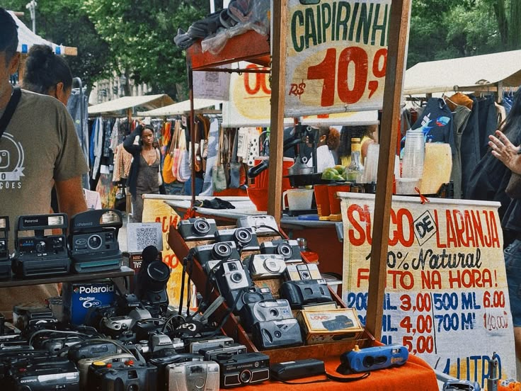
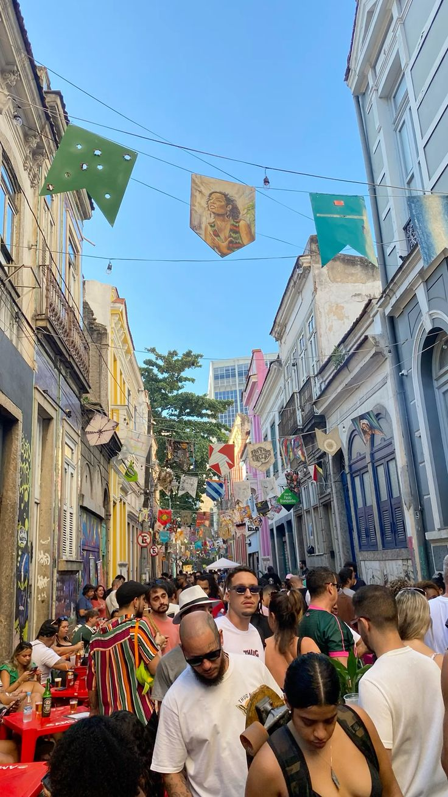
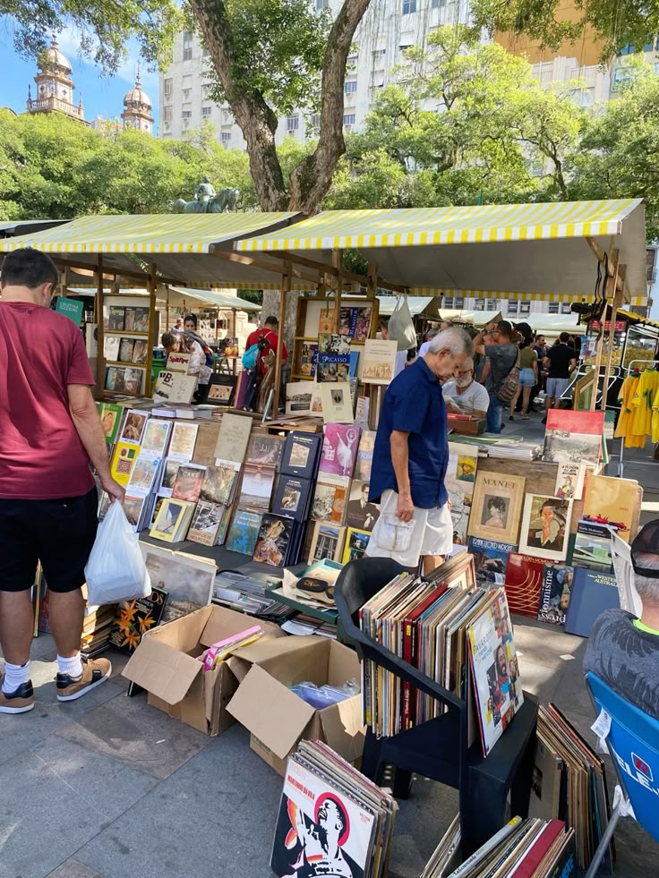
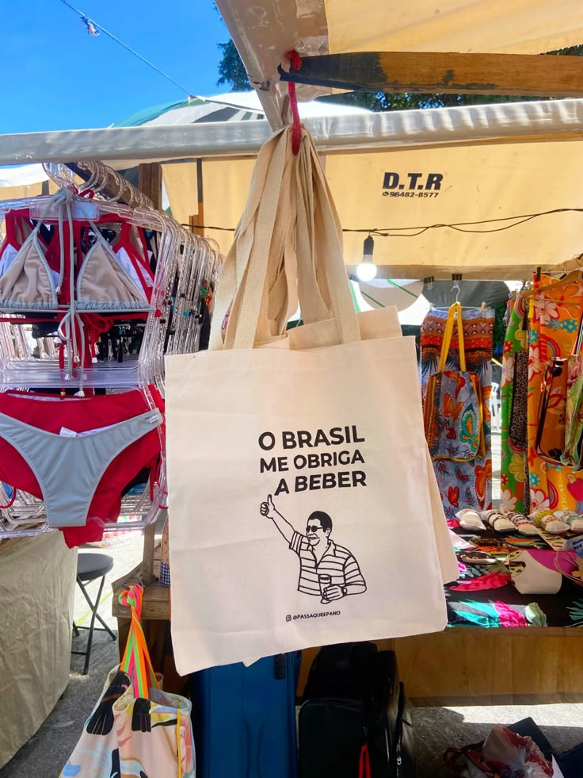

Seu portal para uma das feiras mais tradicionais e animadas do Rio!
Bem-vindo à Feira da Glória!
Um Domingo Clássico Carioca
Descubra os sabores, cores e sons da Feira da Glória, um ponto de encontro cultural e gastronômico no coração do Rio de Janeiro. Realizada aos domingos, esta feira é um programa imperdível para moradores e turistas.

Achados vintage e o clima descontraído da feira.
Sobre a Feira
Localizada na Avenida Augusto Severo, no bairro da Glória, a feira acontece tradicionalmente aos domingos, geralmente das 7h às 15h, com eventos musicais que podem se estender.
É um espaço que mistura a tradicional feira livre, com barracas de frutas, verduras e legumes frescos, com um vibrante mercado de artesanato, gastronomia e apresentações culturais.

A atmosfera vibrante e festiva da feira.
Horário: Domingos, das 07h às 19h.
O Que Encontrar
A Feira da Glória é um universo de descobertas! Prepare-se para encontrar:
Gastronomia
Sabores autênticos preparados na hora.
Delícias para todos os gostos: pastéis, tapiocas, acarajé, comidas regionais e internacionais, além de sucos e cervejas artesanais.
Artesanato e Produtos

Livros, vinis e raridades para colecionadores.
Grande variedade de artesanato local, roupas, bijuterias, acessórios, discos de vinil e produtos de brechó.
Cultura e Lazer

Criatividade e bom humor nos produtos da feira.
Música ao vivo com rodas de samba, chorinho e DJs. Um ótimo lugar para passear e absorver a cultura carioca.
Dicas Úteis
A Feira da Glória é um programa para todas as idades. Aproveite para experimentar novos sabores, conversar com os feirantes e artistas, e sentir a verdadeira alma carioca.